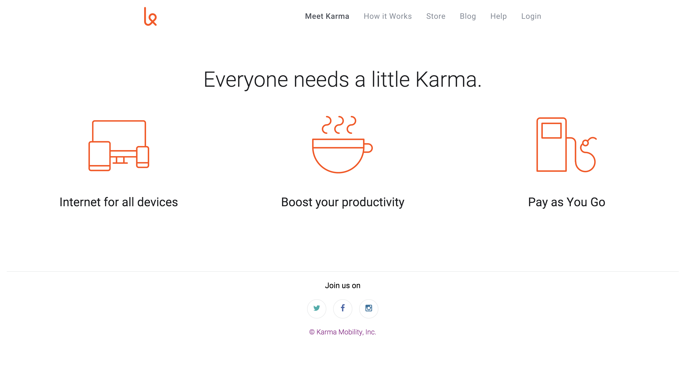
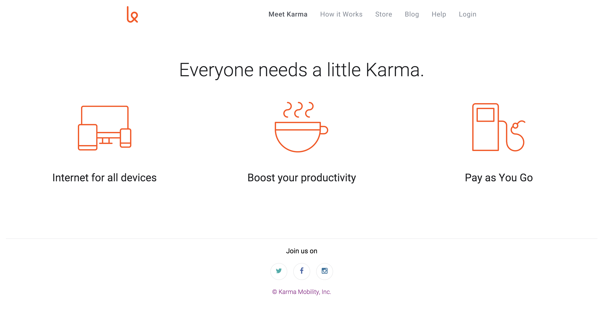

Karma Clone
 

Description: This is a reproduction of the Karma webpage. Using Chrome Developer tools the CSS and HTML were studied and mimiced. This project also incorporated the use of font-awesome symbols.
View on GitHub
New York Times "Hack"

Description: Working within the NY Times Home page, I altered the CSS through Chrome Developer Tools. Images were updated, text and links were changed, background colors were switched, and font families and sizes were manipulated.